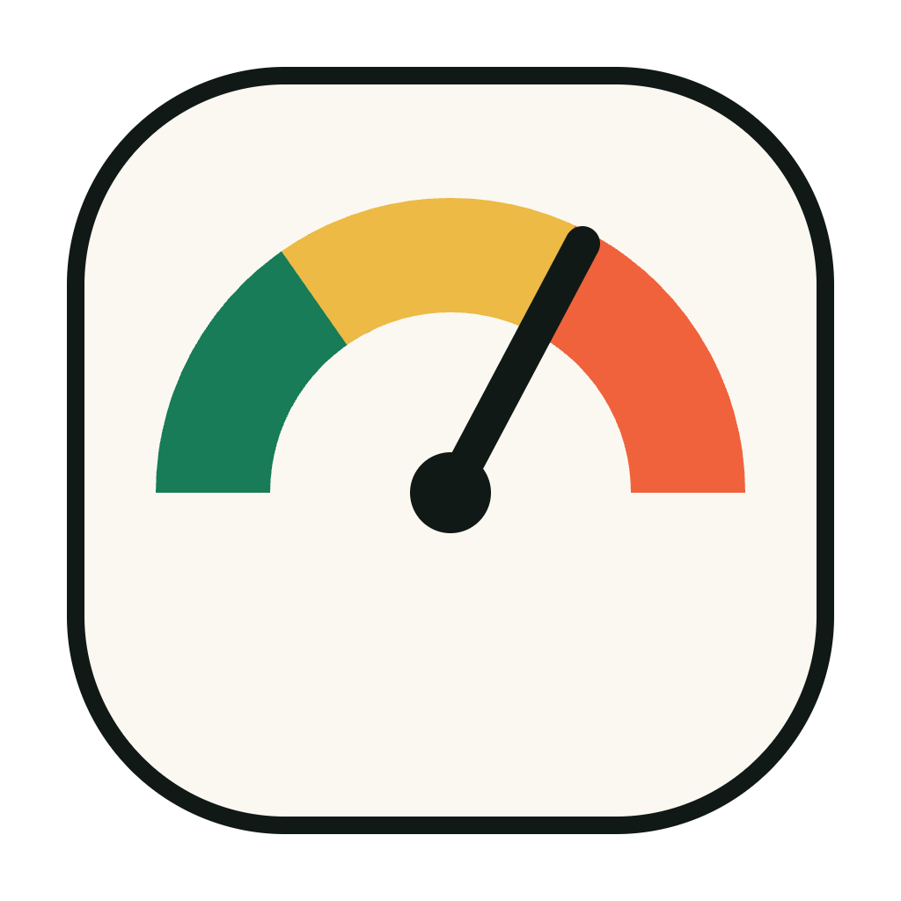

macOS menu bar app

Shows how much of each AI subscription's rate limit you have used, in the menu bar. Claude only for now; the provider layer is shaped so Codex can be added later.
Version 0.1.0 — macOS 15 or later — Apple silicon and Intel
One click on the gauge opens the list. Each account shows its plan, when it was last checked, and a meter per limit window, so a five-hour session limit and a weekly limit are visible at the same time. The popover refreshes on open, debounced to thirty seconds.
The tray label carries the highest session utilization across your accounts, so a glance is usually enough.
Sign in once per account through a real Claude login window. If a session expires, that row says so and offers to sign in again — nothing else stops working.
A notification when a weekly limit resets before you expected it to. Clicking it opens the popover.
One switch. No login item to hunt down in System Settings.
It runs as a menu bar accessory, so it stays out of the dock and out of ⌘-tab.
Usage snapshots are written to a local file. There is no server, no account and no telemetry.
The provider layer is generic. Codex is the next one in, when its usage data is reachable.
Swift and SwiftUI, with the parsing and formatting logic in a tested core package.
Adding an account, then a week of usage in two minutes.
{{ r.title }}
{{ r.body }}
{{ q.q }}
{{ q.a }}
Something broken, or a provider you want next? Open an issue, or mail me.